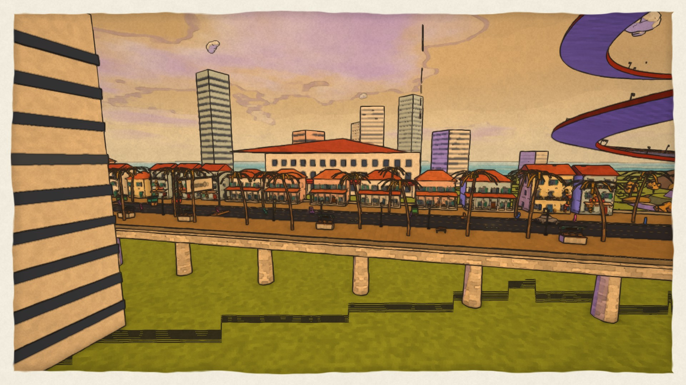
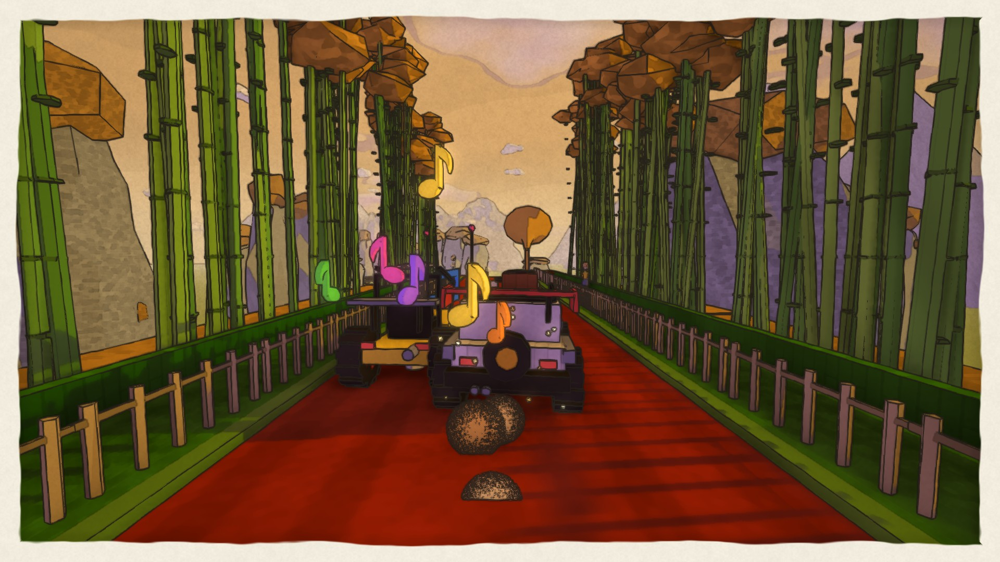
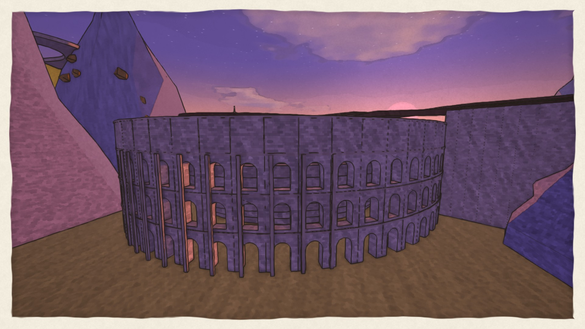
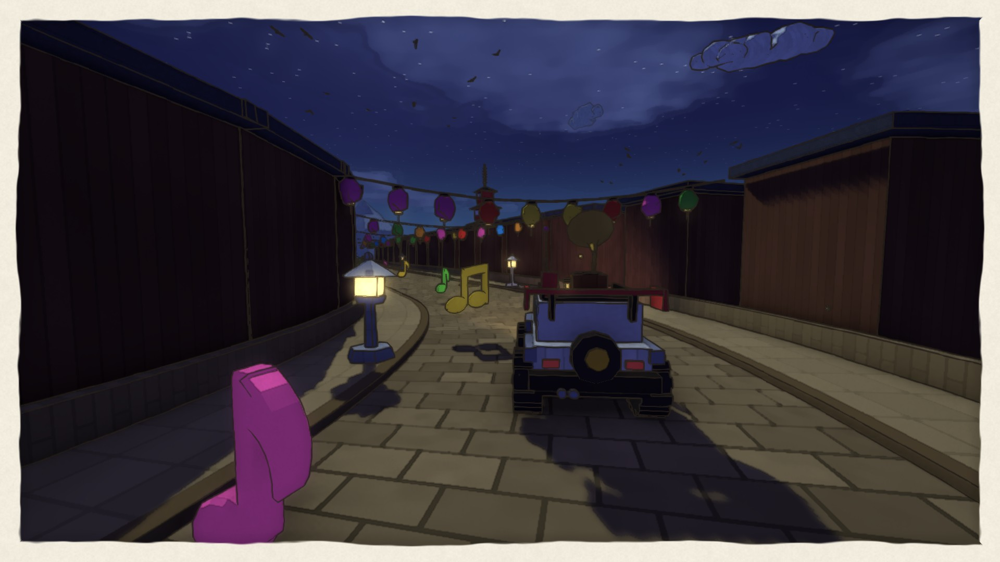
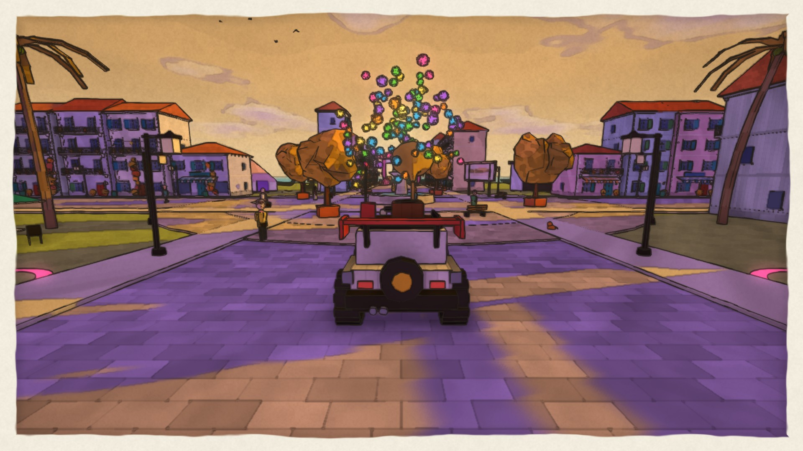
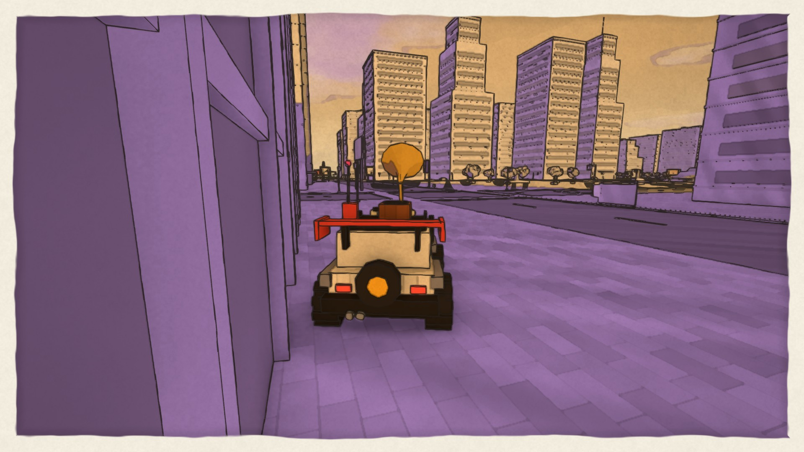
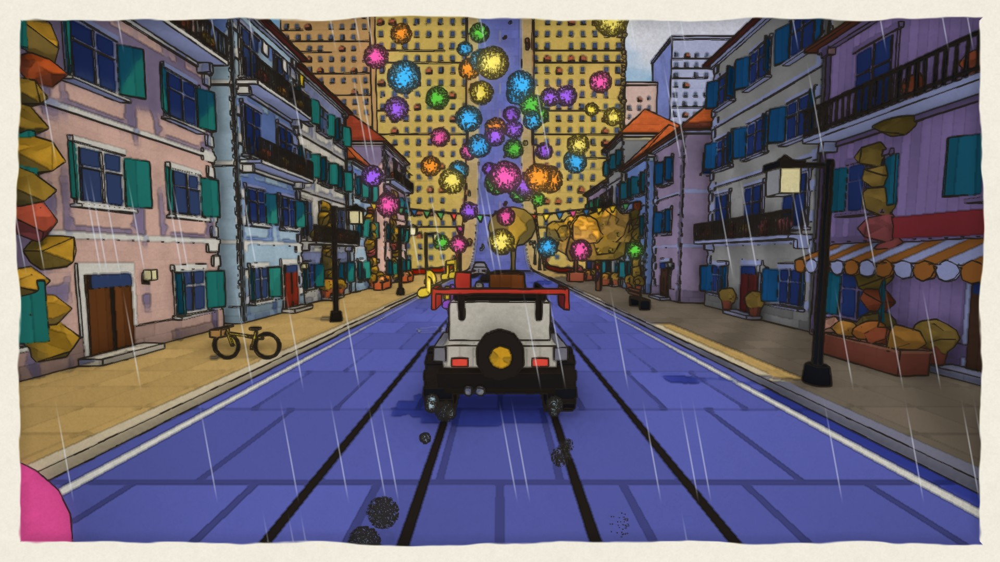
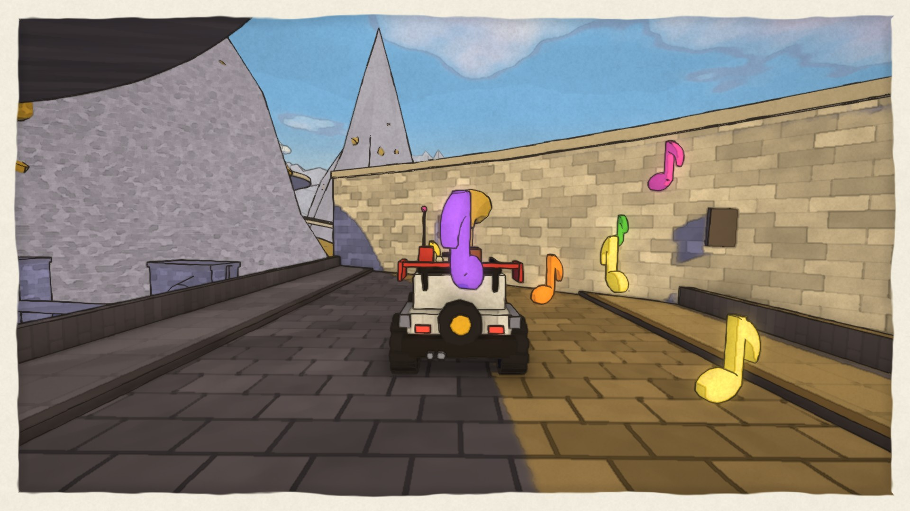

About the game
Inkroads is a road trip through living watercolour paintings. Drive a little rover along roads that loop, dive and roll through eight painted chapters. They pass Sri Lanka's Galle Face and Sigiriya, the wonders of the world, Kyoto's lantern streets and Hạ Long Bay, postcards from the Nile to the tea hills of Ella, the Eiffel Tower and Big Ben, the Golden Gate and Times Square, and a road trip across Sri Lanka from Colombo to Galle. Every district has its own music, and the notes you pick up play along with it, on the beat.
Between the roads are three free-roam towns: Harbour Town, Lantern Village and Serendib City. Explore on foot or on wheels, find twenty hidden pockets, paint murals, take photos and bring sketched districts back to colour. The towns dress up for Vesak, Sinhala and Tamil New Year and Diwali, and change with the seasons.
Play together in rooms of friends: convoys, drift and stunt contests, co-op paint splashes, races checked by the server, group photos and an emote wheel. Build your own roads in the Road Studio, share them in the gallery and enter the weekly contest.
Features
- Eight chapters, 52 painted districts, each with its own music; three free-roam towns
- A watercolour look with ink outlines, plus an optional realistic lighting mode
- 10 vehicles, from a paper boat that floats to a lantern balloon; 99 garage parts, paint finishes and wraps
- A character creator with 131 wardrobe items, 10 fabric prints, pets and saved outfits
- Online multiplayer: convoys, contests, co-op events, verified races, voice chat (opt-in)
- Road Studio: build, share and rate roads; weekly contest
- 108 trophies, sticker books and seasonal goals
- 24 languages; accessible menus (keyboard, screen readers, reduced motion)
- Safety first: chat filter, mute, block and report, parental PIN
Trailer
This one-minute cut was rendered in software at 1280×720 (Low graphics) in a build container, so it looks plainer than the game on a graphics card. A full-quality 1080p cut is made with node tools/trailer.mjs on a machine with a graphics card.
Screenshots
















All 1920×1080. Free to use in coverage of the game.
Logos and store art
| File | Size | Use |
|---|---|---|
| icon.png | 512×512 | App icon |
| steam-header.png | 920×430 | Header capsule |
| steam-main.png | 1232×706 | Main capsule |
| steam-small.png | 462×174 | Small capsule |
| steam-vertical.png | 748×896 | Vertical capsule |
| steam-library-capsule.png | 600×900 | Library capsule |
| steam-library-hero.jpg | 3840×1240 | Library hero (no text) |
| itch-cover.png | 630×500 | itch.io cover |
| social-card.png | 1200×630 | Social media preview |
| helao2-logo.jpg | — | Studio logo |


About HelaO2
Inkroads is made by HelaO2. More at helao2.com.